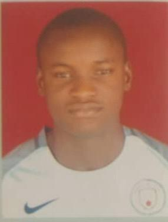

Mustapha Sultan

Summary
To work with dedicated professionals in any organization where I can explore
and utilize my acquired knowledge and skils, initiative and experience in
accomplishing corporate goals and objectives as well as acquire relevent
skills and proficiencies for maximum input.
Education
- HND, Civil Engineering.Kwara State Polytechnic, Ilorin, Kwara State.
Work Experience
NYSC PROGRAM AT HITECH CONSTRUCTION COMPANY,
OGUN STATE: (2022-2023) POSITION: SITE ENGINEER
- Supervise constractors on site, ensuring that works meet the highest standards expected.
- Develop geometric design from the survey results using AutoCad, Prota-structure.
KWARA STATE MINISTRY OF WORKS ILORIN, KWARA STATE.
(2019-2020) POSITION:Industrial Training.
SKILLS
- Results-oriented
- Creativity
- Idea development
- Resistance to stress
- Good manners
My Hobbies
My Contact